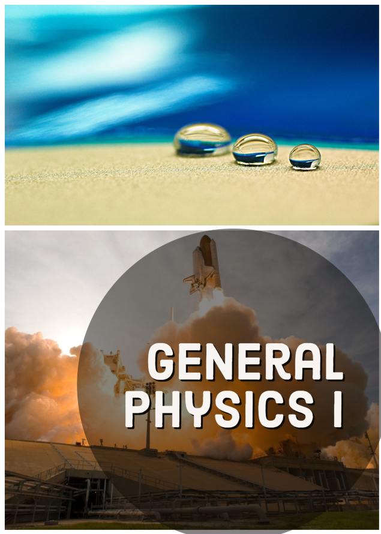

General Physics is organized such that topics are introduced conceptually with a steady progression to precise definitions and analytical applications. The analytical aspect (problem solving) is tied back to the conceptual before moving on to another topic. Each introductory chapter, for example, opens with an engaging photograph relevant to the subject of the chapter and interesting applications that are easy for most students to visualize.
Use the Table of Contents on the left to read the book.
